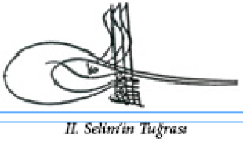
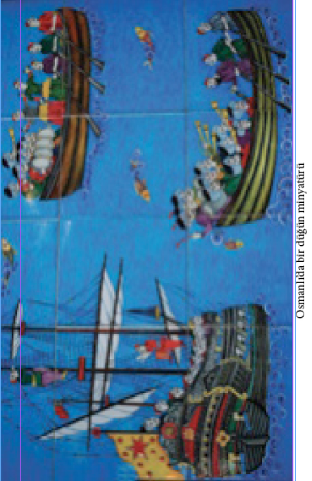
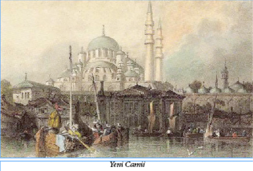
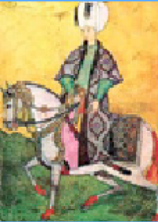

KANUNİ’NİN CENAZE NAMAZLARI
Kanunî Sultan Süleyman’ın cenaze namazı üç defa kılınmıştır: ilk namazı Macaristan’da Zigetvar Kalesi önündeki Türk ordugâhında bulunan otağ-ı hümayunda, büyük padişahın ölümü askerden saklandığı için, gizli olarak kılınmıştı. İkinci namaz babasının cenazesini Belgrad’da karşılayan yeni padişah II. Selim’in de katılımıyla Belgrad sahrasında kılınmıştı ve bu namaza 25.000 kişi katılmıştı. Üçüncü namaz da İstanbul’da, Süleymaniye Camii’nin musalla taşı önünde kılındı. Bu namaza bütün İstanbul halkı katıldı. Gerilere doğru bütün sokaklar, Süleymaniye’den Fatih’e kadar cemaatle dolmuştu… Bu namazın beş yüz imamla kılındığı rivayet olunur. Asrın büyük şairi Bâki’nin de meşhur “Sultan Süleyman Mersiyesi”ni ilk defa bu cenaze töreninde okuduğu, şairi dinleyenlerin hıçkırıklarının gökyüzünü tuttuğu söylenir.
MİMAR SİNAN VE YUMURTALI HARÇ
Dönemin padişahı Sultan II. Selim, Mimar Sinan’a şanına yakışır bir camii inşa etmesini buyurmuş. Sinan hemen kolları sıvamış Selimiye Camii’ni yapmaya başlamış. Temeller kazılmış, iskeleler kurulmuş… Çalışmalar sürerken Mimar Sinan bir gün elinde bir yumurtayla çıkagelmiş. Kendi kendine bir şeyler mırıldanıyormuş, aklından hesap yapıyormuş gibi bir hali varmış. Sonra eğilmiş ve yumurtayı inşaat kumuna kırmış ve başlamış karıştırmaya... Görenler şaşırmış tabii. Bir müddet sonra: “Tüm inşaatta bu harcı kullanacağız.” diye buyurmuş. Sırf bu harç meselesi için Edirne Karaağaç’ta bir çiftlik kurdurtmuş. 30.000 tavuğun her gün düzenli olarak yumurtaları toplanıp kumla ve kille karıştırılıp camide kullanılmış.

YOKSA HÜRREM
BİR İTALYAN SOYLUSU MUYDU?
Vatikan Gizli Arşivi’ne araştırmalar yapan Türkiye Katolik Ruhani Reisler Kurulu’nun Resmi Tarihçisi Dr. Rinaldo Marmara dört yıl süren araştırmalarının sonucunu 2012 yılı Nisan ayı başında şöyle açıklamıştır:
Belgede çıkartılan soyağacının en tepesinde Hürrem Sultan’ın annesi olduğu iddia edilen İtalyan asilzadesi Hanne Marsilli’nin adı bulunuyor. Hanne Marsilli’nin çocukları Leonardo Marsilli ve Margherita Marsilli isimlerinin Yazılı olduğu soyağacında daha sonra her iki kardeşin de soyunun devamı ayrı ayrı belirtiliyor. Leonardo’nun ağacında Cesara Marsilli, Alessandro Marsilli, Laura Marsilla ve Fabio Chigi isimleri yazılı. Dr. Marmara bu soyağacına kısa bir not düşmektedir: “Laura Marsilli’den sonra soyadı Chigi’ye dönüşüyor. Görülen o ki Laura Marsilli, Vatikan’ın en önemli ailelerinden olan Chigi ailesinden birisiyle evlenmiş ve bu evlilikten de Fabio Chigi yanı Papa 7. Alessandro dünyaya gelmiş”
Soy ağacının diğer ucunda ise tanıdık iki isim görülmektedir: Sultan Süleyman ve La Rossa (Kızıl) lakaplı Margherita Marsilli. Bu iki ismin hemen altında Selim, İbrahim ve Mehmet isimleri yazılıdır. Dr. Marmara’ya göre: “Sultan Süleyman ve Hürrem Sultan’ın oğlu Selim, 11. Osmanlı padişahı olarak tahta çıktı. Soyağacında Selim’den sonraki diğer padişahların adı belirtilmemiş ve 18. Osmanlı padişahı 1. İbrahim ile 19. Osmanlı Padişahı 4. Mehmet’in adı yazılmış. 4. Mehmet’in adının altına da “Hükmeden Padişah” notu düşülmüş. Demek ki bu belge hazırlandığında Osmanlı tahtında 4. Mehmet oturuyordu.”
Rinaldi’nin araştırmalarında bulduğu bir belgeye göre de “Hürrem Sultan bugüne kadar sanıldığı gibi yoksul bir Ukraynalı köle değil, hem İtalyan hem de zengin bir ailenin kızı. Hatta ailesinin şatosu var. Ancak bu belge Hürrem Sultan ile ilgili hazırlanmamış. Bu belgenin üçüncü sayfasında bir soyağacı çıkartılıyor. Bu soyağacına göre ise Hürrem Sultan’ın soyundan gelen Padişah 4. Mehmet ile erkek kardeşi Leonardo’nun soyundan gelen Papa 7. Alessandro akrabadır.”
KOL VE SAKAL MESELESİ
Osmanlı donanmasının ilk defa bozguna uğradığı İnebahtı Deniz Savaşı’ndan sonra, II. Selim’in emriyle yeni bir donanma kurulur. Donanmayı kurmakla görevlendirilen Kılıç Ali Paşa bahar ayında donanmayı her şeyi ile hazırlamıştı. İnebahtı Savaşı bozgunundan sonra Sokollu6 Mehmet Paşa 7 Mart 1573’de Venedik Büyükelçisi Barbaro’ya:
6 Bazı ciddi kaynaklarda bile “Sokullu” yazılışına rastladığımız bu sadrazamın asıl adı “Bajo Nenadić”tir ve Sırp Ortodoks olarak doğmuş, 1516 yılında devşirme olarak Osmanlı’ya alınmıştır. Doğduğu yerin adı Sırpçada “Sokolovići”, Osmanlıcada “Sokol” olduğu için “Sokollu” lakabını almış olması çok doğaldır… (Bu konuda Prof. Mustafa İmamović’in makalesi okunmaya değer: http://web.archive.org/web/20091027141616/http://www.geocities.com/famous_bosniaks/MEHMED_PASA_SOKOLOVICH.html )
“Biz sizden Kıbrıs’ı alarak kolunuzu kestik. Siz ise donanmamızı İnebahtı Savaşı’nda yenmekle bizim sakalımızı tıraş ettiniz. Kesilen kol yerine gelmez ama tıraş edilen sakal daha gür biter!”
SUMATRA’DAKİ TÜRK ÇANI
Sumatra adasındaki en büyük kilisenin çanı eski bir Türk topundan yapılmıştır ve üzerinde II. Selim’in tuğrası vardır. 1570 yılında Sumatra’dan gelen bir istek üzerine oraya gönderilen silahlar arasında Açe elçisinin II. Selim’e hediye olarak verdiği bir torba Sumatra biberine ithafen, ‘lada seçupak’ (bir torba biber) adlı dev top da bulunmaktaydı. Bu top 16’ıncı asırda Sumatra Müslümanlarına yardım için İstanbul’dan gönderilen Türk döküm ustaları tarafından orada dökülmüş, üzerine de bu ada Müslümanlarının Osmanlı’ya tabiiyetinin alâmeti olarak bu padişahın tuğrası konmuştu.
GARİP HUYLU BİR VEZİR
16. yüzyılın en namlı vezirlerinden Gürcistan Fatihi Özdemiroğlu Osman Paşa (1528 – 1585) geceleri yatakta yatmazdı. Her akşam saz, söz ve köçek oyunlarıyla eğlenirdi. Önünde kurulmuş bir işret sofrası bulundurmazdı; el çırpar saki içkisini getirir, diğer içoğlanları da ellerinde tabaklarla önünde diz çökerek çeşitli mezeleri sunarlar ve sonra edeple çekilirlerdi. İçki, saz ve köçek faslı bitince, Osman Paşa, mutemet hizmetkarı olan sakisini çağırır, başını bu gencin omzuna dayar öylece birkaç saat uyurdu, sonra kalkar, abdest alır, teheccüd namazına durur, hüngür hüngür ağlayarak ibadet ederdi. Öyle ki seccadeden kalktığı zaman seccadenin gözyaşlarıyla bir bardak su dökülmüş gibi ıslanmış olduğunu görürlerdi.
MAYMUNLARIN İDAMI
Osmanlı Türklerinin maymunları donanmada görevlendirdikleri, bu hayvanları gemilerin serenlerine çıkartmak suretiyle gözcülük yaptırdıkları eskiden beri bilinmektedir. Akdeniz’i Türk gölü haline getiren Osmanlılar, özellikle II. Bayezit’ten sonra gemicilik sanatıyla, deniz seferlerinin incelikleriyle daha fazla meşgul oldular. Bu arada, uzağı görme yeteneği son derece gelişmiş olan eğitimli maymunlardan yararlanma yoluna gidilmişti. Kısaca söylemek gerekirse, ünlü denizcilerimiz maymunları birer dürbün veya teleskop gibi kullanıyorlardı. Kuzey Afrika’dan getirilen iri maymunları Gelibolu ve İstanbul tersanelerinde bir güzel eğittikten sonra, savaş gemilerinde gözcü olarak görevlendiriyorlardı. İşte böyle ciddi bir şekilde terbiye edilen gözcü maymunlar gemilerin serenlerine ve cundalarına çıkıyorlar, ufukları gözetliyorlar, engin denizlerde kendilerine doğru yanaşmakta olan bir gemi görünce, kendilerine özgü yöntemlerle derhal aşağıya haber verip gerekli önlemlerin alınmasına vesile oluyorlardı...
Eski İstanbul’da yelken, halat, makara, zift, varil… Kısacası bütün gemici ihtiyaçlarının satıldığı yer Galata’da, iki köprü başı arasındaki saha idi. Gazi Köprüsü başında, Sokollu Mehmet Paşa Camii (Azapkapısı Camii) civarında da bir sıra maymuncu dükkânı vardı; burada tersane gemileri ve tüccar gemileri için eğitimli maymunlar satılırdı. III. Murat’ın hocası olup daha sonra da Rumeli kazaskerliği yapan Molla Abdülkerim Efendi gayet tutucu, sinirli, her aklına geleni yapan, padişah üzerindeki nüfuzuna dayanarak hiç kimseden korkmayan bir adamdı. Güzel konuşur, camilerde vaaz ettiği zaman dinleyicileri çok memnun ederdi. Bir gün, bu hoca bir kitapta “maymun cinselliğe âlet olur” diye bir yazı okumuş, sinirinden ateş kesilmişti. Hemen arkasına binlerce insan toplayarak

Azapkapısı Çarşısı’na gitmiş, maymuncu dükkânlarını basmış, ne kadar maymun varsa yakalatıp hayvancıkları oradaki ağaçlara astırarak idam ettirmişti. Bu olaydan sonra hocaya da “Maymunkeş7 İmam” lakabı takılmıştı.
7 Maymunkeş: Halkın yanlış bir dilbilgisiyle, “Maymuncu” anlamına getirmek isteyerek kullandığı bu söz aslında “maymun çeken” (esrar çekmek gibi) anlamına gelen Arapça+Türkçe+Farsça bir tamlama olmuş…
TOP GÜLLESİ YAPILARAK
İDAM EDİLEN ADAM
Osmanlı’da yakalanan ağır suçluların işkencelerle idam edilmesi yaygın bir uygulamaydı. Bu işkenceler bazen de çengele asma, çarmıha germe, hatta kazığa oturtma biçimlerinde yapılırdı. 16. yüzyıl sonlarında, Bostancıbaşılardan Ferhat Ağa bir defaya mahsus olarak bir de “topla atma” cezası icat etmişti: Suçlu genç bir yeniçeri idi, bir imamın nikâhlı genç karısını kandırıp kaçırmış, kadının saçlarını keserek oğlan kıyafetine sokmuş, bir müddet yanında pervasızca gezdirmişti. Üsküdar’da yakalandı, Tophane’ye götürüldü. Ferhat Ağa o kadar kızmıştı ki o dönemde yaygın olan çengel, çarmıh, kazık gibi ağır cezaları az gördü; delikanlıyı çırılçıplak soydurttu, bilek, dirsek, diz ve ayak eklemlerini demir çekiçlerle kırdırıp zavallıyı yağlı paçavralara sararak bir havan topunun namlusuna gülle gibi tıktırttı, sonra topu ateşleterek havaya fırlattı, paramparça etti.
GAZİ KOÇ
16. yüzyıl sonlarında Almanlar, Macaristan’daki Sobotska kalemizi kuşattılar. Bu kuşatma bir Kurban Bayramı arifesine rastlamıştı. Kalenin muhafızları bayramda kesmek için gayet büyük bir koç beslemişlerdi; kendilerine imdat gelmeyeceğini anlayan 100 kadar muhafız atlarına bindiler ve kaleden yalınkılıç çıkarak düşmanın kuşatma hatlarını yardılar ve kurtuldular. Bu çıkış hücumuna kaledeki koç da katılmış ve boynuzlarıyla iki Alman askeri öldürerek, atlılarla beraber Budin’e kadar gelmişti. Askerler adını “Gazi Koç” koydular ve Kurban Bayramı’nda Budin’de kestiler.
UĞURSUZ SAAT
Müverrih Peçevî İbrahim Efendi cellât mezadı ve uğursuz eşyalar üzerine son derece etkileyici bir hikaye aktarmaktadır:
16. yüzyıl sonu saray ricalinden Kapıağası Gazanfer Ağa, Padişah III. Murat üzerindeki sonsuz nüfuzu sayesinde rüşvet yolundan büyük bir servet yapmıştı. O zamanlar İstanbul’da Rüstem Ağa isminde namlı bir saatçi ve kuyumcu vardı. Gerçekten büyük sanatkârdı ve Gazanfer Ağa bu zata fevkalâde kıymetli elmaslarla süslü bir koyun saati8 yaptırmıştı. Saatin mücevherlerini de kendisi vermişti. Kapı Ağası Gazanfer Ağa cellâda verilince, Ağa’nın kıymetli taşlarla süslü saati koynundan çıkmış, cellâdın eline düşmüştü. Cellâtlar başlı başına bir servet olan bu saat için bir mezat yaptılar. Saati cellât mezadından Tırnakçı Hasan Paşa satın almıştı. Kısa süre sonra Tırnakçı Paşa da idam olundu, saat yine cellât mezadına düştü. Bu sefer de bu harikulâde güzel saati pek ucuz bir bedel karşılığında Kasım Paşa satın aldı. Bir iki ay geçmedi, Kasım Paşa da cellâda verildi, saat onun da koynundan çıktı ve üçüncü defa cellât mezadına düştü. Bu sefer de Gazanfer Ağa’nın uğursuz saatini Sadrazam Derviş Paşa satın aldı ve “Civan Bey” lakaplı kardeşine hediye etti. Civan Bey’in asıl adı bilinmemektedir; çünkü pek genç yaşında, yani tüysüz bir delikanlı iken sadrazamın himayesiyle Eğriboz Sancak Beyliği’ne tayin edilmiş ve “Civan Bey” dene dene adı unutulmuştur.
8 Koyun saati: Cep saatinin daha büyüğü olup, koyunda taşınan saat.
Müverrih Reçeli İbrahim Efendi ile bu Civan Bey Eğriboz’daki Bey konağının deniz üstüne kurulmuş salaş taraçasında sohbet ediyorlarmış. Söz saatten açılmış. İbrahim Efendi de saat meraklısı imiş. Civan Bey koynundan çok süslü bir saat çıkararak müverrihe göstermiş. İbrahim Efendi: “Ömrümde bu kadar güzel saat görmedim!” deyince Civan Bey de saatin hikâyesini anlatmış. Peçevî elindeki saati hemen bırakarak “Bu nasıl hediye! Böyle uğursuz saati insan düşmanına vermez!” demiş. Bu söz Civan Bey’i etkilemiş, hemen hançeriyle saatin elmaslarını çıkarmış ve bir çekiç ile de çarklarını kırarak denize atmış…
Denizin dibinde saatin parıltısı bile görülüyormuş.
Civan Bey’le İbrahim Efendi taraçada otururlarken bir atlı gelmiş, Civan Bey’e vazifesinden azledildiğini tebliğ etmiş. Civan Bey şaşırmış: “Azlimizi gerektiren bir şeyimiz yok idi!” demiş. Gelen adam: “Beyim! Sadrazam Derviş Paşa idam olundu. Sizin de idamınız için ferman çıkıp Bostancıbaşılara gönderildi, ama sonra şefaatçileriniz himmet ettiler. İkinci bir ferman ile ben gönderildim ve idamınızla görevlendirilenlere ancak yarım saat önce yetişebildim!” cevabını vermiş.
Bu olayı aktaranlar der ki, ikinci fermanı getiren adam, idam fermanını getirenlere Civan Bey meşhur saati çekiç ile kırdığı anda yetişmişti!
BAŞIYLA FUTBOL OYNANAN VEZİR
16. yüzyıl sonlarında, III. Mehmet devrinin büyük nüfuz sahibi vezirlerinden Doğancı Kara Mehmet Paşa aslında bir Ermeni idi. III. Mehmet’in maiyetine şehzadeliğinde girmiş, terbiyesi, zarafeti, nüktedanlığı ile bu padişahın has nedimeleri arasına girmişti. Kubbe veziri (devlet bakanı) idi, fakat padişah ona öyle takdir ediyordu ki herkes kendisini sadrazamlığa en kuvvetli aday olarak görüyordu. Sadrazam Bosnalı İbrahim Paşa ile aralarının açılması kendisini felakete sürükledi. Gayet kurnaz ve sinsi olan İbrahim Paşa hasmını mahvetmek için, makamının geniş yetkilerini kullanamadı, padişahtan çekindi. Ama el altından askeri teşvik etti, askere ulufe9 dağıtılacağı bir divan gününde asker para alamayınca Kara Mehmet Paşa’nın başını istedi ve ayak diredi. “Padişah Mehmet Paşa’yı bize tercih ederse biz de bizi seven bir şehzadeyi ona tercih ederiz” dediler. Padişah büyük bir ızdırap içinde Mehmet Paşa’yı feda etti. Paşa divandan kaldırılıp siyaset meydanına götürüldü, başı kesildi. Kesik başı alan yeniçerilerle sipahiler saray avlularından Atmeydanı’na kadar, top gibi, ayaklarıyla vurarak oradan oraya yuvarlaya yuvarlaya götürdüler, bir türlü ellerinden almak mümkün olmadı. Sonunda, kendi sadık kâhyası paşanın kesik kellesini 400 altına asilerden satın aldı ve gövdesinin yanına koyarak gömdürdü.
9 Ulufe: Osmanlı’da askerlere üç ayda bir verilen maaş.
SOKOLLUZÂDE HASANPAŞA’NIN
CENNET BAĞI
Sadrazam Sokollu Mehmet Paşa’nın oğlu Hasan Paşa 16. yüzyıl sonlarının en namlı ve en zengin vezirlerindendir. Müverrih Peçevî İbrahim Efendi onun hayatından söz ederken şöyle anlatır: “Gayet yakışıklı, gösterişli, bir şehbaz ve şehlevend vezirdi. Ama çok mağrurdu, gözüne kimseyi kestirmez, akranı şöyle dursun üstüne bile iltifat etmezdi. Yanında daima bir mahbup gözde hazinedarı bulunurdu, kendi ne giyerse hazinedarı oğlana da onun eşini giydirirdi. Bindiği atın eşi ata bindirir ve hazinedarı ile at başı beraber giderlerdi. Çoğunlukla da al atlas entari giyerdi. Beline altı parça süslü paftadan oluşan bir altın kemer bağlardı ki bu kemerin paftaları üzerinde Zümrüdüanka kuşu resimleri vardı. Bağdat valisi iken üstat kuyumculara gümüşten büyük bir bahçe yaptırmıştı. Kurulup toplanabilen ve paşa tarafından “cennet bağı” adı verilmiş olan bu gümüş çiçek bahçesi bahar açmış dallardan, nar ve turunç fidanlarından oluşmuş, pek güzel ve seyretmesi insanı hayretten hayrete düşüren bir kuyumculuk şaheseriydi. Hasan Paşa bir gün Bağdat’tan gelirken haydut saldırısına uğradı. Sokolluzâde’nin yanında maiyetinden başka kuvvet olmadığından, Tokat Kalesi’ne kapanmaya mecbur olmuştu. Peşindeki haydut Deli Hasan bir taraftan Tokat’ı kuşatma altına almış, diğer taraftan da Paşa’nın ardı sıra gelen ağırlığını, hazinesini ve meşhur cennet bağını eline geçirmişti. Deli Hasan, Paşa’nın hazinesini eşkıyaya bölüştürürken kıymetli kumaşları arşın yerine kılıçla ölçtürmüş, altın ve mücevheri de kalkan ile üleştirmişti. Cennet bağına gelince önce onu kurdurmuş, ayakdaşlarıyla beraber bir müddet seyretmiş ve sonra o sanat eserini de kırdırarak adamlarına dağıtmıştı. Hasan Paşa’ya gelince bir sabah Tokat Kalesi burçlarında Deli Hasan’ın baldırıçıplak ordusunu seyrederken karşı tarafta bir keskin nişancı tarafından atılan bir kurşunla alnından vurularak ölmüştü.”
“HAYATI ROMAN” BİR ADAM:
ABAZA MEHMET PAŞA
I. Ahmet zamanında Anadolu’da yaşanan Celâli İsyanı’nın ileri gelen simalarından Canbolat oğlu Ali Bey’in Mehmet isminde gayet sevgili bir Abaza kölesi vardı. Bir an bile yanından ayırmadığı bu çocuğu kendisine hazinedar yapmıştı. Sadrazam Kuyucu Murat Paşa, Canbolat oğlu ile yaptığı çok kanlı bir muharebede Celâlîleri bozguna uğratmış, koca Oruç Ovası yaralı ve ölülerle kaplanmıştı… Paşa bunları ölü-yaralı diye ayırmakla uğraşmaktansa kocaman kuyular kazdırıp tamamını gömdü. Zaten “Kuyucu” lakabı da bu olaydan gelmedir…
Takip kuvvetlerinin getirdiği esirlerin de sorguya çekilmeden kuyuların ağzında diz çökertilip boyunları vuruluyordu. Canbolat oğlunun hazinedarı Abaza Mehmet de yakalanmıştı, henüz 15-16 yaşlarında ve melekler kadar güzel bir gençti. Boynu vurulmak üzere çökertilmişken Mehmet’i yeniçeri ağası Halil Ağa gördü, acıdı, ölümden kurtararak yanına aldı, manevî evlat edindi. Abaza Mehmet, Halil Ağa’nın himayesinde devlet hizmetine girdi. Babalığı sadrazam olunca o da vali ve “Abaza Mehmet Paşa” oldu. Fakat Oruç Ovası’ndaki müthiş hatıra, Murat Paşa’nın kuyusu gözünün önünden hiçbir zaman silinmedi ve o gün kendisini öldürmek için çökertmiş yeniçerilere karşı içinde sönmez bir kin besledi. Paşa Erzurum Valisi iken İstanbul’da Genç Osman, yeniçerilerin çıkardığı bir ihtilâlde tahttan indirilmiş ve Yedikule Zindanı’nda boğulmuştu. Abaza Mehmet Paşa bunu fırsat bildi, Sultan Osman’ın kan davasını güderek isyan etti ve işe Erzurum’dan başlayarak, ne kadar yeniçeri varsa öldürttü. Sonra Sivas’ı ele geçirdi ve orada da bir yeniçeri katliamı yaptı. Erzurum’dan Kayseri’ye kadar Anadolu’da yeniçeri dolaşamaz olmuştu. Yeniçeriler kısa diz çakşırı giyerlerdi; bundan ötürü dizleri, baldır ve bacaklarına nispetle yanık tenli olurdu. Yollardaki bütün yolcular Abaza’nın askerleri tarafından çevrilir, çakşırları çıkartılıp dizleri muayene olunurdu: Kısa diz çakşırı giymek huyu olup da yeniçeri olmayan nice masum insanlar da “sen yeniçerisin” diye idam olunmuştu. Abaza isyanı beş yıldan fazla sürdü. Nihayet IV. Murat zamanında aman diledi, affedildi. İstanbul’a geldi, bu genç padişahın yakın dostu ve has nedimi oldu. Yakışıklı ve güzel adamdı, giyimine, kuşamına aşırı itina eden şık bir adamdı. İstanbul’da onun gibi giyinmek moda oldu, padişah bile “Abaza kesimi” (Çerkeska) denilen giysilerden yaptırdı. Aslında, valiliğinden büyük bir serveti vardı, ama padişahın en sevgili gözdesi Silâhtar Mustafa Paşa ile geçinemedi. Mustafa Paşa’nın babası Bosnalı Sinan Bezirgân adında bir adamdı ve eskiden Abaza Paşa’nın gadrine uğramıştı. Mustafa Paşa bunu unutmamıştı. Silahtar’ın telkinleriyle padişahın gözünden düşürüldü. Bir gün saraya davet edildi, gelir gelmez Bostancıbaşı Duca Mustafa Ağa tarafından tevkif edildi ve Çinili Köşk’e hapsedildi. Akşamın alacakaranlığında da idam için ferman çıktı. Cellât Kara Ali yamağıyla köşke geldi. Kendilerine namaza durmuş birisini gösterip: “Abaza Paşa budur!” dediler, onlar da kement atıp boğdu. Ertesi günü, Padişah’ın emriyle Abaza Mehmet Paşa’ya büyük bir cenaze düzenlendi. Naaş, Vezneciler’de, vaktiyle henüz bir çocukken kendisini öldürtmek isteyen Kuyucu Murat Paşa’nın türbesinde, bu meşhur sadrazamın yanına defnedildi.
Aradan yıllar geçti, IV. Murat öldü, Sultan İbrahim padişah oldu. Silâhtar Mustafa Paşa idam olundu, Bostancıbaşı Duca Mustafa da bir valilik ile İstanbul’dan sürüldü.
1620 (Hicrî: 1036) yılında idi, bir gün İran sınırından bir adam Erzurum’a çıkageldi ve “Ben Abaza Mehmet Paşa’yım!” diye Erzurum’daki Abaza Paşa sarayına geçti kuruldu. Abaza Paşa’nın Erzurum’daki eski dostları ziyaretine koştular. Evet… Bu adam, yıllarca evvel İstanbul’da idamını işittikleri Abaza Mehmet Paşa idi… Kendilerine eski günlerin anılarından bahsediyor, hatta onların unuttuğu birçok şeyi o hatırlıyordu! Paşa, macerasını eski arkadaşına şöylece nakletmişti:
“Silâhtar Mustafa’nın ısrarlarına mağlup olan IV. Murat bir içki sofrasında Abaza’yı öldürteceğine söz vermişti; fakat pek az sonra bu kararına pişman olmuştu. Has nedimini tevkif ettirmiş, sarayda Abaza Paşa diye bir idam mahkûmunu boğdurtmuştu. Paşayı da gece, saray rıhtımından tebdil kıyafetle bir gemiye bindirmişler, Gelibolu’ya göndermişlerdi. Abaza Paşa oradan bir Cezayir gemisine atlamış, Cezayir’e gitmiş, adını sanını değiştirerek korsan olmuştu… Bir zamanlar giyinişi, kıyafeti İstanbul gençleri tarafından taklit edilen zarif adam yalın ayaklı, çıplak baldırlı, eli çatal bıçaklı bir Mehmet Dayı idi artık ve bir kadırga sahibi olmuştu. Yedi yıl Akdeniz’de dolaşmış, Septe Boğazı’ndan Atlas Okyanusu’na çıkmış ve bir deniz muharebesinde Danimarkalılara esir düşmüştü. Danimarkalılar da onu Portekiz Kralı’nın gemicilerine satmışlardı. Portekizliler Doğu lisanlarına aşina olan bu esirden çevirmen olarak yararlanmak istemişler, onu bir Portekiz filosuyla Hint seferine yollamışlardı. Fakat Mehmet Dayı’nın bindiği gemi Çin sularında müthiş bir fırtınaya tutularak batmış, yalnız bu Müslüman gemici, bir kalas parçasının üstünde sahile düşüp canını kurtarmıştı. Düştüğü sahil halkı Müslüman’dı, onunda Müslüman ve bir Osmanlı padişahının nedimi ve paşası olduğunu öğrenince kendisine hürmet göstermişler, yol harçlığı vermişlerdi. Abaza Mehmet Paşa da bir kervana katılarak Çin, Türkeli, Horasan, Belh ve Buhara üzerinden İran’a, oradan da Erzurum’a gelmişti. Abaza Mehmet Paşa’nın gelişi ve ağzından dinlenen baş döndürücü maceraları bütün Erzurum halkını heyecana düşürmüştü. Veli Süleyman Paşa

keyfiyeti ayrıntılı bir raporla İstanbul’a, Sultan İbrahim’e bildirdi. Zaten evhamlı ve hasta olan Sultan İbrahim sonsuz bir telaşa düştü… Koca bir padişahın fermanıyla idam olunan bir adam yıllar sonra elini kolunu sallayarak meydana çıkarsa, o padişahın kendisi de bir gün ahretten dönebilirdi. Duca Mustafa Paşa çağırıldı ve keyfiyet kendisinden soruldu. Eski Bostancıbaşı kellesinden korktu “Erzurum’a gelen adam bir sahtekârdır, Abaza Paşa’yı ben padişah fermanıyla idam ettim” dedi. Padişah cellât Kara Ali’yi çağırttı. Müthiş cellât da “Vallahi padişahım, akşam namazından sonra idi. Ortalık karanlıktı, yüzükoyun yatmış bir adam gösterdiler, ‘budur’ dediler, boğdum, yüzünü görmedim!” dedi.
Erzurum Valisi Süleyman Paşa’ya bir idam fermanı daha gönderildi. Vali de Abaza Mehmet Paşa’yı sarayına davet etti, gelir gelmez de valinin iç oğlanları üzerine hançer düşürerek öldürdüler. Abaza Paşa’nın gövdesinden ayrılan kesik başı İstanbul’a yollandı; fakat bu kesik talihsiz baş, Erzurum’dan İstanbul’a kadar bozulmuş, derisi yüzülmüş tanınmaz bir hale gelmişti. İstanbul’da bulunan eski bendelerinin hiçbiri kesin bir şey söyleyemedi. Herkes “hem odur, hem değildir!” diyordu...
ŞEHZADE MUSTAFA’NIN HAZİN ÖLÜMÜ
III. Murat’ın çeşitli kadınlardan, oğlan ve kız 102 çocuğu olduğu söylenir. Ölümünde bunlardan 20 erkek evladı hayatta idi… En büyükleri Şehzade Mehmet padişah oldu ve padişah olur olmaz, öbür on dokuz kardeşini idam ettirdi. Bunlardan Mustafa ve Bayezit 17-18 yaşlarında, Osman ve Abdullah 13-15 yaşlarında, geri kalan on beşi de henüz meme çocuğu idiler. Bu olaylar Osmanlı hanedanı tarihinin en korkunç cinayetlerindendir. Büyük şehzadenin hocası devrin kıymetli şairlerinden Nev’î Efendi idi. Bu zatın anlattığına göre, özellikle Şehzade Mustafa gayet güzel bir çocukmuş, zarif ve ince ruhlu imiş, çok güzel konuşurmuş ve şiire, edebiyata karşı da fevkalâde meraklı, hevesli imiş. Babasının ölümünü ve büyük kardeşi Mehmet’in tahta çıktığını öğrenince, kendisini bekleyen feci sonu hissetmiş ve hemen bir kâğıt parçasına şu beyiti yazarak hocası Nev’î Efendi’ye bir veda mektubu gibi yollamıştı:
Nâsiyemde Kâtib-i Kudret ne yazdı bilmedim
(Kudretli Kâtip [Allah] alnımda ne yazdı bilmedim)
Âh kim bu Gülşen-i âlemde bir kez gülmedim
(Âh ki bu âlemin gül bahçesinde bir kez gülmedim)
YAPIMI 66 YIL SÜREN CAMİİ
İstanbul’un sembolü olan eserlerden Yeni Camii’nin temelleri Ağustos 1597 tarihinde atıldı. Arazi denize yakın olduğu için gece gündüz, sekiz ay boyunca temellerdeki sular çekildi. Cami inşaatı devam ederken 1603 tarihinde III. Mehmet öldü. Camiyi yaptırmaya karar veren Valide Safiye Sultan gücünü kaybettiği için, caminin yapımına yıllarca ara verildi. Bu ara 1660 yılında caminin yeniden başlayan inşaatı devam ederken oldukça uzun süren, büyük bir yangın çıktı. Hasbahçe’den Unkapanı’na kadar olan yerler yandı. Yangında cami de zarar gördü. Padişah IV. Mehmet’in annesi Valide Turhan Sultan cami etrafında yanan evlerin arsalarını alarak çarşı ve pazar yaptırdı.
Caminin yapımı 1663 yılında tamamlandı. Böylece Sultan Ahmet Camii’nden önce yapımına başlanan eser Sultan Ahmet Camii’nden yıllar sonra tamamlanabildi. Camii Safiye Sultan tarafından yaptırılmaya başlandı. Fakat Valide Turhan Sultan zamanında tamamlandı. Bu nedenle camiye “Valide Sultan Camisi” de denmekteydi. Valide sultanlar tarafından birçok yerde yaptırılan camilerden ayrılması için bu camiye “Yeni Valide Sultan Camisi” denmiştir. Zamanla yalnızca “Yeni Cami” olarak anılmaya başlandı.
İSTANBUL İÇİNDE ATA BİNME YASAĞI
Tanzimat’tan önceki devirde, İstanbul’da padişahtan başka ancak üç kişi, eğer ata veya tercih ederlerse arabaya binmek hakkına sahipti: Şeyhülislam, Rumeli Kazaskeri ve Anadolu Kazaskeri. Vezirler, devlet ricali ve zata mahsus bir imtiyaz ile ekalliyet âyan ve eşrafı ancak ata binebilirlerdi. 17. yüzyılın ilk yıllarına kadar ricalden sayılmayan memurlar ve serveti ne olursa olsun halk büyük şehir içinde ata da binemezdi. Sıradan vatandaşlar ancak eşeğe veya eşek vs. hayvanlar tarafından çekilen küçük arabalara binebilirlerdi. Türk töresinde çok önemli yeri olan at, Osmanlı’da da bir soyluluk simgesiydi. Ata binme yasağına nasıl titizlikle uygulandığını göstermesi açısından, şu olaya bakabiliriz:
“Hilye-i Peygamberî” adlı dinî niteliği yüksek ve pek tutulan eserin yazarı Hâkanî Mehmet Bey bu eserini bitirdiği 1598 yılında yetmiş yaşını aşmış bulunuyordu. Görevi Babıâli Kalemi’nde, konağı da Edirnekapı civarında idi. Eseri saraydan en aşağı halk tabakasına kadar, büyük bir heyecanla karşılanınca şaire, sadaret makamından ne tür bir ödül istediği soruldu. Şair: “Artık ihtiyar oldum, her gün Edirnekapısı’na kadar yaya gidip gelmeye kudretim kalmadı, müsaade buyrulursa hayvan ile gidip gelsem” cevabını verdi. Oysa Hâkanî Mehmet Bey’in rütbesinde bir memurun ata binmesi yasaktı ve şairin yüksek hatırı için bile devlet düzeni bozulmadı. Hükümet Babıâli civarında bir ev alıp şaire hediye etmeyi tercih etti ve sanatçının arzusunu böylece yerine getirdi. Fakat bir müddet sonra, Müslümanlar hakkındaki şehir içinde ata binme yasağı kaldırıldı.
CELLÂTLAR VE ECEL ŞERBETİ
Osmanlı döneminde cellâtlar genellikle Hırvat dönmeleri veya Çingenelerden seçilirdi ve 15. yüzyıldan itibaren kullanılmaya başlanmışlardı. 16. yüzyılda padişahın özel koruması olan dilsizler, aynı zamanda cellât görevi de görürlerdi. Dilsizler padişahın en küçük bir işaretinin dahi ne anlama geldiğini çok iyi bilirlerdi. Sağır ve dilsizlere bu vazifenin verilmesi mahkûmun son çığlıklarını duyup etkilenmemeleri ya da kurbanın yalvarmasıyla merhamete gelmemeleri içindi.
16. yy da bostancı ocağına bağlı bir de cellât ocağı kuruldu. İlk kurulduğu zamanlar cellât ocağında beş cellât varken, zamanla cellâtların sayısı artarak yetmişe ulaştı. Cellâtların lideri olan Cellâtbaşı, bostancıların lideri Bostancıbaşı’na bağlıydı. Sıradan mahkûmların cezalarını diğer cellâtlar infaz ederken, devlet adamlarının ve önemli kişilerin infazını Cellâtbaşı gerçekleştirirdi. Vezirlerin, kazaskerlerin, beylerbeyilerin vs. üst düzey devlet adamlarının idamlarında Bostancıbaşı da bulunur, idam fermanını okuyarak, mahkûmu teselli eden sözler söylerdi. Sonra da Cellâtbaşı infazı gerçekleştirirdi. Saraydan çıkan infaz emri eğer idam sarayda olacaksa Bostancıbaşı’ya, saray veya İstanbul dışında olacaksa Kapıcıbaşı’ya verilirdi.
“Bostancıbaşı! Götürün şu mendeburu Balıkhane Kasrı’na.”
Padişahın söylediği bu cümle, Arz Odası’nın duvarlarında yankılanınca, karşısındaki kişi buz kesilir, ölümün soğuk nefesini ensesinde hissederdi. Bostancıbaşı cellâtların başıydı. Balıkhane Kasrı ise idamlık siyasi mahkûmların idam edilmeden önce üç gün bekletildikleri zindandı. Bu mekân Gülhane Parkı’nın sahile yakın kısmında bulunan kızıl renkli, büyükçe bir kasırdı. İdamlık mahkûmlar önce bostancıların kollarında bu kasra gönderilirler, haklarında verilen karar Divan-ı Hümayun’da tekrar görüşülüp suçu sabit olduğu ve ölümü hak ettiği anlaşılırsa, mahkûm üçüncü gün idam edilirdi. Böylelikle Osmanlı sultanları anlık bir öfke ve yanlış bir kararla bir masumun kanına girmemiş oluyorlardı.
Üç gün boyunca bu zindanın soğuk odalarında akıbetini bekleyen mahkûmun, affedilmesi için dua etmekten başka elinden bir şey gelmezdi. Üçüncü gün sonunda zindanın demir kapısı açılır ve elinde tepsiyle, insan azmanı Bostancıbaşı görünürdü. Tepsideki bir kadeh şerbeti mahkûma sunmak için gelen bostancı, saygıda kusur etmezdi. Sessizce içeri girer, saygıyla şerbeti sunardı.

Bu şerbete “ecel şerbeti” denirdi. Genellikle pek konuşma olmazdı aralarında. Çünkü mahkûm Bostancıbaşı’nın getirdiği kadehin renginden akıbetini anlardı. Eğer şerbet beyaz kadehle gelmişse affedildiğine, kırmızı kadehle gelmişse idam edileceğine işaretti. Kadeh beyazsa mahkûmun yüzüne kan gelir, rahat bir nefes alarak şerbetini içer ve yine bostancıların nezaretinde kendisi için sahilde, yalı köşkünün önündeki bostancı kayıkhanesinde hazırlanmış çektiriye binerek, sürgün edildiği mekâna doğru yol alırdı. Çünkü idamdan affedilmenin karşılığı sürgündü. Beyaz kadehin anlamı buydu. Kızıl kadehe gelince… Ölüm demek olan kızıl renkli kadehi görür görmez mahkûmun yüzündeki kan çekilir, beti benzi atar, suratı bembeyaz kesilirdi korkudan. Zira az sonra içeceği buz gibi kızılcık şerbeti onun ecel şerbeti olurdu…
CELLÂT MEZADI
Bir mahkûm cellâda verildi mi giysileri dahil üzerinden çıkan her şey cellâtların olurdu. Bu eşyalar toplanır ve yılda bir veya iki defa büyük bir mezat ile satılır, bedelleri de cellâtlar arasında bölüşülürdü. Bu satışa “Cellât Mezadı” denilirdi. Cellât mezatlarında çok değerli eşyalar bulunurdu ve sahipleri cellât elinde can verdiklerinden, bir uğursuzluk yorularak gerçek değerlerinden çok ucuza satılırdı. Ama yine de cellât mezadına çok az insan itibar ederdi. Bazı devlet adamları ve zenginler cellâdın pençesi yakalarına yapışmadan önce, üzerlerinde bulunan değerli kürkleri, yüzükleri, saatleri, keselerini çıkarırlar, orada bulunanlara: “Beni anar, bir Fatiha okursunuz!” diyerek hediye ederlerdi.
DEVŞİRME GENÇLER
17. yüzyılın başına gelindiğinde, Osmanlı’daki devşirme kurumunun kuralları iyice belli olmuştu: Devşirilecek gençlerin sekiz yaşından küçük ve yirmi yaşından büyük olmaması gerekirdi ve ailelerinin de Acem, Çingene, Kürt, Türk, Gürcü, Rus veya Yahudi olmaması şartı vardı. En önemli şart ise sağlam yapılı, yakışıklı ve Hristiyan olmalarıydı. Devşirme kurumu, tamamı devşirmelerden oluşan yeniçeri ocağının 1826’da ortadan kaldırılmasıyla birlikte tarihe karışmıştır.